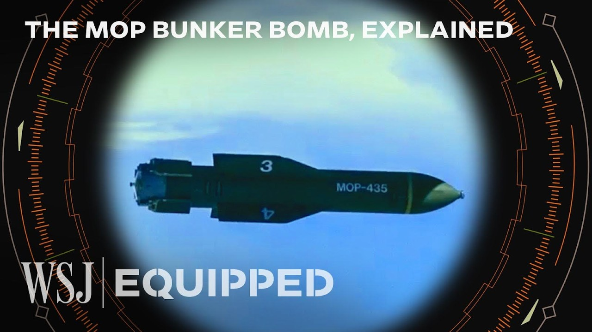

【这款3万磅的美国炸弹可摧毁伊朗最深的核掩体 | WSJ Equipped】
Summary: The GBU-57, or Massive Ordnance Penetrator, is the world's largest non-nuclear bomb, capable of destroying deeply buried targets like Iran's nuclear facilities, but may require multiple strikes and US assistance due to limitations in penetration depth and Israel's lack of heavy bombers.
摘要： GBU-57，即巨型钻地弹，是世界上最大的非核炸弹，能够摧毁伊朗核设施等深埋目标，但由于穿透深度限制及以色列缺乏重型轰炸机，可能需要多次打击和美国协助。

⏱️ Estimated Reading Time: 5 min
📚 六级生词 📚 雅思生词 📚 托福生词 📚 专八生词 📚 SAT生词 📚 考研生词 📚 GRE生词 📚 高考生词
This is a GBU-57, known as a Massive Ordnance Penetrator.
这是GBU-57，被称为巨型钻地弹。
At 20 feet long and weighing 30,000 pounds, it is the world's largest non-nuclear bomb and can destroy targets buried deep underground, earning it the name "Bunker Buster".
它长20英尺，重3万磅，是世界上最大的非核炸弹，能够摧毁深埋地下的目标，因此得名“掩体粉碎机”。
To destroy Iran's heavily fortified nuclear facilities, experts say these are the conventional weapons with the best chance of success.
专家表示，要摧毁伊朗高度加固的核设施，这些是最有可能成功的常规武器。
This is a big sucker.
这是个大家伙。
It is called the Massive Ordnance Penetrator, which basically sums up what it is.
它被称为巨型钻地弹，基本上概括了它的功能。
Here's why the MOP represents Israel's best chance at destroying Iran's facilities and why it can't do it alone.
这就是为什么MOP是以色列摧毁伊朗设施的最佳选择，以及为什么它无法单独完成。
The MOP is the largest Bunker Buster bomb in the US arsenal.
MOP是美国军火库中最大的掩体粉碎炸弹。
It's designed to penetrate hardened targets and plow through almost 200 feet of rock before detonating.
它的设计目的是穿透加固目标，并在引爆前钻入近200英尺的岩石。
Due to the MOP's weight, they can only be carried by the biggest bombers, such as B-2s.
由于MOP的重量，它们只能由最大的轰炸机（如B-2）携带。
One bomb is unlikely to burrow deep enough to hit Iran's nuclear facilities by itself.
单枚炸弹不太可能独自钻得足够深以击中伊朗的核设施。
The metal is gonna melt at some point and so it does have limitations in terms of how far it can penetrate and that's why you may have to follow it up with multiple instances.
金属最终会熔化，因此在穿透深度上确实存在限制，这就是为什么可能需要多次打击。
You drive a wedge in, it expands, and then you continue to drive it in the second time.
你先打入一个楔子，它扩张后，再第二次打入。
And each time it's more effective.
每次都会更有效。
In a sense, you're trying to create an earthquake, you're trying to crack the mountain and to channel that seismic energy down to make whatever is under there, whatever facility is under there, shake around a lot.
从某种意义上说，你试图制造一场地震，试图震裂山体，并将地震能量传导下去，使下方的任何设施剧烈摇晃。
The MOP is equipped with advanced guidance systems, including GPS, to allow for accurate targeting.
MOP配备了包括GPS在内的先进制导系统，以实现精准瞄准。
It is also fitted with a delayed fuse, which allows the bomb to explode after it has penetrated its target.
它还装有延迟引信，使炸弹在穿透目标后爆炸。
You kind of wait until it gets down in there before it blows up 'cause if you wanna maximize the energy, every foot counts in order to get it deeper, to burrow down and to have the effect.
你需要等它钻入深处后再引爆，因为如果想最大化能量，每一英尺的深度都至关重要，以便钻得更深并产生效果。
Since it launched its campaign against Iran's nuclear program, Israel has damaged critical nuclear infrastructure and killed scientists.
自对伊朗核计划发起行动以来，以色列已破坏关键核设施并杀害科学家。
Iran has denied trying to build nuclear weapons and says its nuclear program is peaceful.
伊朗否认试图制造核武器，并称其核计划是和平的。
According to the International Atomic Energy Agency, Iran already has enough highly enriched uranium to make around 10 nuclear weapons.
根据国际原子能机构的数据，伊朗已拥有足够的高浓缩铀来制造约10枚核武器。
Satellite images have shown damage at nuclear facilities, including Iran's largest enrichment facility, Natanz.
卫星图像显示，包括伊朗最大的浓缩设施纳坦兹在内的核设施已受损。
But one key location remains unscathed.
但一个关键地点仍完好无损。
The Fordow Fuel Enrichment Plant, where Iran produces highly enriched uranium.
福尔多燃料浓缩厂，伊朗在那里生产高浓缩铀。
It's hidden in the mountains and is believed to be buried up to 295 feet below ground.
它隐藏在山中，据信深埋地下295英尺。
It's harder to hit deliberately so because the Iranians buried it under a mountain.
故意击中它更难，因为伊朗人将其埋在山下。
Look, the US put NORAD under Cheyenne Mountain.
看，美国将北美防空司令部设在夏延山下。
It's way down under a lot of granite and a lot of rock, and you wanna raise the threshold for your adversaries to hit something.
它深埋在大量花岗岩和岩石下，你想提高对手击中它的门槛。
Sometimes it's just really useful to bury it.
有时埋在地下确实很有用。
While Israel has Bunker Busters, none of the ones in its arsenal are powerful enough to penetrate deep enough to hit Fordow.
尽管以色列拥有掩体粉碎机，但其军火库中没有一款能穿透足够深度以击中福尔多。
This is why the Israelis probably need US assistance.
这就是为什么以色列可能需要美国的协助。
Israelis have a lot of bombs, but they need things that can kind of crack the mountain and create a wedge to create the tremors, and to create vibrations that will be helpful to destroy the facility.
以色列有很多炸弹，但他们需要能震裂山体、制造楔子、产生震动和振动以摧毁设施的东西。
In addition to lacking the weapons to destroy Fordow, Israel also lacks the heavy bombers.
除了缺乏摧毁福尔多的武器外，以色列还缺乏重型轰炸机。
Its ally, the US, has both.
其盟友美国两者兼备。
Now fundamentally, there's a choice here to be made about whether it is in the US national interest to take out Fordow, to take out the Iranian nuclear program once and for all.
现在根本上需要做出选择：摧毁福尔多、一劳永逸地终结伊朗核计划是否符合美国的国家利益。